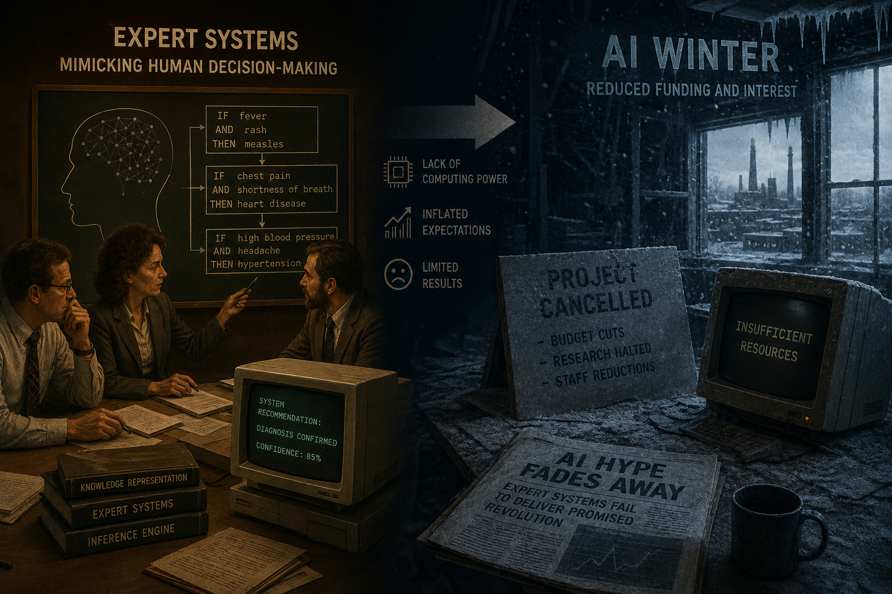

Expert Systems and the "AI Winter"
In the 1970s, researchers introduced expert systems designed to mimic human decision-making matrix processes. However, a severe lack of computational capability paired with heavily inflated marketing expectations caused widespread industrial disillusionment.
This led directly into a prolonged period of reduced governmental investments and minimized commercial interest known historically as the "AI Winter".